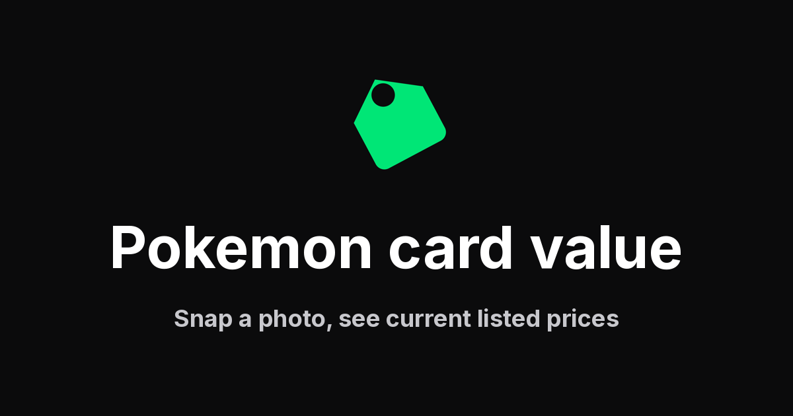

Typing "Charizard" into a search box is a common way to look up Pokemon card value, and it is also a common way to get the wrong market. The same name has been printed many times, across many sets, as a first-edition or an unlimited card, as a holofoil or a non-holofoil, in English, Japanese, and other languages, raw or already graded. Those versions do not share one price.
If you want a useful Pokémon card value, check your card from a photo. Start with the copy in your hand, confirm the exact print, and then look at a current listed range for that print. That is what  How Much Is It Worth: Scanner is built to do.
How Much Is It Worth: Scanner is built to do.
A photo is more honest than a remembered name because the details that move the market are small. You want the name, the set symbol, the card number, any edition stamp, and the copyright line to be readable. On many early English cards, a first-edition mark is a small stamp on the left side. An unlimited print of the same card will not have that stamp.
Take or upload up to three photos. The front gets you started. The back helps with wear, color, and fakes. If the card is already in a graded slab, photograph the slab so the grade and cert number are readable, and say that it is graded when you confirm the identification.
The app shows the identification first. If the set, edition, or language looks off, you correct it before any price lookup. Then you see a Worth about figure, the listed range around it, a confidence level, and the live listings behind the number, so you can open them yourself. Trading card prices use PokéWallet, with a source credit where that data appears. If the data is thin, the result is labelled as a rough estimate. The product will not invent a precise figure, and it is not a certified appraisal or an offer to buy.
Want to try it? Snap a photo at https://howmuchisitworth.today/how-much-is-my-pokemon-card-worth. The website includes one free web scan a day. Get the free iPhone app at https://apps.apple.com/app/id6832980231, with 3 free scans plus 1 a week. On Android? Check https://howmuchisitworth.today/ for the Android release.
Edition and print run come first. A first-edition Base Set card and an unlimited print should not be priced off each other. Language matters too. English, Japanese, and other-language prints are collected in different ways, and they should be matched to listings in the same language.
Condition is the next split. Collectors look at centering, corners, edges, and the surface, including scratches in the holofoil. A card that looks sharp in a dim photo can still show whitening on the back in even light. Do not clean a card, wipe it with chemicals, or press a bent card flat to improve the picture. That can do lasting damage, and it can make the card harder to describe honestly.
You can adjust the condition in a tap (Good, Near Mint, Graded, and more) and watch the value update. If a result looks surprisingly high, check whether the comps are graded or a different edition. If it looks surprisingly low, check whether a set mark or first-edition stamp was missed.
If you decide to sell, you can copy a ready-made listing in a tap, with Quick sale, Fair price, or Top dollar. Save each scan to a collection if you are working through a binder and want a running picture of what you own.
A listed range is still a spread of asking prices. A sold price can sit below it, especially if a listing has been up for a long time or the card has wear a photo hid. Famous early cards are also widely faked or reprinted as proxies. If a price looks too good, compare the back color, the font, and the holofoil pattern with a known genuine copy.
If you have a whole binder, check the cards with first-edition stamps, early set symbols, or obvious holofoil rares first. Common recent cards are often worth only a small amount, and a scan will usually make that clear quickly.
The app is free to start. You get 3 free scans plus 1 a week.
If you are trying to find a Pokemon card value, check your card from a photo. Start at https://howmuchisitworth.today/how-much-is-my-pokemon-card-worth, or download the app and scan your first card free.
Pokémon and Pokémon character names are trademarks of Nintendo, Creatures Inc., Game Freak, and The Pokémon Company. This post and the How Much Is It Worth app are not affiliated with, endorsed by, or sponsored by those parties.